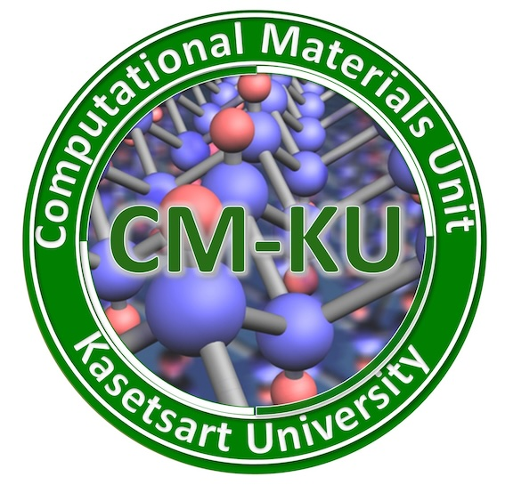

Computational Materials Unit at KUConference · Korat, Thailand
ANSCSE29
The Computational Materials Unit attended ANSCSE29 in Korat, sharing ideas and connecting with Thailand’s scientific computing community.
- Date
- 22–25 July 2026
- Location
- Korat, Thailand
Event gallery
Science and community in Korat
Pakpoom Reunchan and students of the Computational Materials Unit presented their research and connected with colleagues from across Thailand’s computational science and engineering community.